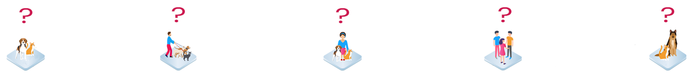

Frequently Asked Questions
FAQ solves most of general questions we recieve.
Please take a look at FAQ section before making an inquiry. If you still have a question, pease visit our contact us page for inquiry.

 About Pet Number Project.
About Pet Number Project.
What is Pet Number project?
Pet Number is aiming to build a decentralized pet registry system that utilizes transparency and traceability of blockchain technology to help people establish a shared pet database, and a transparent and trusted pet supply chain infrastructure. We want to make the current pet registration system decentralized, and bring more opportunities for adoption among all pet communities.
What’s the purpose of Pet Number project?
Ultimate purpose of the project is to create a society where humans and pets can live happily together by establishing advanced technological infrastructures for animal welfare, pet industry, and all pet lovers.
What does Pet Number make possible?
Unlike the current system, Pet Number is decentralized, that means, data could be horizontally shared among all animal welfare organizations, vet hospitals, pet stores, and pet owners.
My pet already has a microchip/tag number, why do I use Pet Numer?
Using Pet Number automatically helps healthy pet community growth that turns to illegal and inhumane business exclusion. In addition, you can get more benefits using Pet Number such as personalized support and discounted deal based on big data analysis.
How PetRegi can eliminate illegal and inhumane businesses?
On Pet Number blockchain, all businesses are registered and the pet transfer records will be transparent, which enables monitor each other such as if this breeder isn’t over-breeding unhealthy pets, if this pet store is selling unsold pet to illegal dealers, and if there’s suspiciou void in supply chain.
How PetRegi utilizes Blockchain?
We utilize the technology to establish pet ownership transfer management and transparent pet supply chain creation.
How can I register my pet on PetRegi Blockchain?
Once Pet Number Blockchain is introduced to public, anyone can register their pets via smartphone app, website, and Pet Number agent stores.
How can I get involved?
Pet Number project is always eager to expand our community. Please follow us on Twitter, Facebook, and telegram for the latest update! Also Pet Number project is looking for advisors, supporters, and industrial experts who can share the same vision to make the project, please contact us via contact us page.
 About Pet Number Agent.
About Pet Number Agent.
What is a PetRegi agent?
Pet Number agent is any individual who help us building decentralized pet registry by providing and submitting pet information, and promoting Pet Number project on social media platforms.
What’s the benefit of becoming Pet Number agent?
Pet Number agents will be rewarded PETT token as bonus.
What is a Pet Number agent store?(Pet stores in Japan only)
Pet Number agent store is a Pet Number authorized pet store that can share same philosophy as us, promote pet adoption and help us familliarize Pet Number to the pet community. Without the help of pet stores, we may not be able to create a better society for humans and pets.
What’s the benefit of becoming a Pet Number agent store? (Pet stores in Japan only)
If Pet Number agent store finds fostors for adoptable pets, Pet Number will pay 20000JPY + PETT token reward for each pet gets a new home. Please contact us via info@petnumber.io or contact us page.
 About Pet Number Tokens.
About Pet Number Tokens.
What is PETN token?
PETN is a token that is internally used in Pet Number system to execute smart contracts.
What is PETT token?
PETT is a token that will be generated during ICO. PETT token can be used as digital currency in Pet Number registration, SNS, and service platforms.
How much is 1 PETT token?
It’s going to be 25 cents/ token. *Subject to change
When and how can I buy PETT token?
Token can be purchased during ICO which we are planning to launch by the end of 2019. Please follow us on Twitter, Facebook, and telegram for the latest update!
 About Blockchain.
About Blockchain.
What is Blockchain?
Blockchain is an online distributed ledger technology that enables shared, transparent, and immutable transaction and asset tracking.
What is Smart Contract?
Smart Contract is a technology that works on blockchain, and it enables secured transparent transaction while avoiding unnecessary middlemans. Smart Contract can be used as a proof of property exchange, currency transfer, and service agreement.
Media Inquires.
Pet Number looks interesting, how can I contact to Pet Number?
We are always welcome to expand our community, and we believe that animal adoption promotions on media is also one of the keys, please contact us via media@petnumber.io or contact us page.